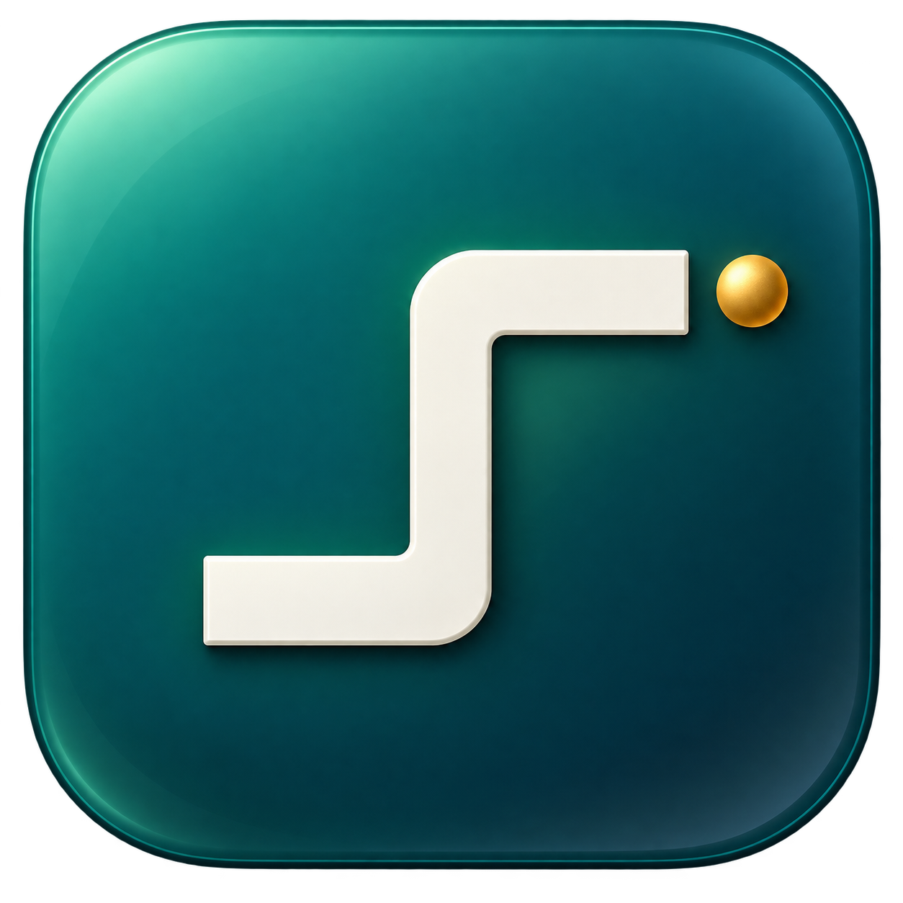

<!doctype html>
<html lang="zh-CN"><meta charset="utf-8"><meta name="viewport" content="width=device-width,initial-scale=1">
<title>Step · 材质图标评审</title>
<style>
*{box-sizing:border-box}body{margin:0;background:#f6f4ee;color:#21392e;font:16px/1.6 system-ui,-apple-system,sans-serif}main{max-width:980px;margin:auto;padding:40px 32px}header{display:flex;justify-content:space-between;align-items:center;border-bottom:1px solid #d9dfd5;padding-bottom:20px}h1{font-size:28px;margin:0}h2{font-size:20px;margin:0 0 16px}p{color:#647067;margin:8px 0}.status{font-size:13px;color:#647067}.hero{display:flex;align-items:center;gap:64px;padding:44px 16px}.hero img{width:240px;height:240px}.hero strong{font-size:44px;letter-spacing:-1px}.panels{display:grid;grid-template-columns:1fr 1fr;gap:20px}.panel{border:1px solid #d9dfd5;border-radius:18px;background:#e9ede5;padding:24px}.dark{background:#16231d;color:#f5f2e9;border-color:#16231d}.sizes{display:flex;align-items:end;justify-content:space-between;gap:18px}.sizes figure{margin:0;text-align:center;min-width:64px}.sizes img{display:block;margin:auto;object-fit:contain}.sizes figcaption{margin-top:12px;font-size:13px;opacity:.75}footer{font-size:13px;margin-top:28px;color:#647067}a{color:inherit}@media(max-width:650px){main{padding:24px}.hero{gap:24px;padding:32px 0;flex-direction:column;align-items:flex-start}.hero img{width:200px;height:200px}.panels{grid-template-columns:1fr}header{gap:16px;align-items:start}.status{max-width:110px}}
</style>
<main><header><h1>Step · 阶梯与目标点</h1><span class="status">设计评审稿 · 尚未接入</span></header>
<section class="hero"><div><strong>step</strong><h2>从想法，到下一步。</h2><p>有方向的光影，清楚的路径与目标。</p></div></section>
<div class="panels"><section class="panel"><h2>浅色背景</h2><div class="sizes">
<figure><figcaption>32 px</figcaption></figure>
<figure><figcaption>48 px</figcaption></figure>
<figure><figcaption>64 px</figcaption></figure>
</div></section><section class="panel dark"><h2>深色背景</h2><div class="sizes">
<figure><figcaption>32 px</figcaption></figure>
<figure><figcaption>48 px</figcaption></figure>
<figure><figcaption>64 px</figcaption></figure>
</div></section></div>
<footer>以上为设计预览；尺寸是浏览器在100%缩放下的CSS像素，不是系统安装截图。<a href="03-goal-step-proposal.png">查看原图</a> · <a href="prompts.md">内置 imagegen 生成记录</a></footer></main></html>
